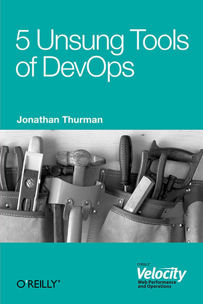

A través de un boletín de Amazon me llegó la noticia de un libro gratuito en formato de EBook con un título que me llamó la atención: 5 Unsung Tools of DevOps. Dicho libro no deja de ser un artículo de Jonathan Thurman sobre una serie de herramientas que él aconseja utilizar en el ámbito de la infraestructura para poder aplicar DeVOps.
El autor hace un repaso del uso que él hace sobre dichas herramientas e incluso entra en algunos aspectos de configuración.
Leer más…
El tercer punto sobre DevOps que propone Gene Kim es la relación con ITIL y ITSM, dos conjuntos de prácticas y disciplinas para la gestión de operaciones IT, muy extendidas, especialmente en las grandes empresas.
Como en las dos anteriores entregas, esperamos que os unáis al debate en Twitter, con el hashtag #11cosasdevops.
Leer más…
Comentarios
Ya está aquí la segunda entrega de las 11 cosas que necesitas saber sobre DevOps, por Gene Kim. En esta ocasión, se comenta sobre la relación con las metodologías ágiles, y sus efectos en los ciclos de desarrollo de aplicaciones. En este apartado, explica cómo la aplicación de las metodologías ágiles ayudan a la aparición de gran parte del movimiento DevOps, explicando cómo se relacionan y qué aportan al negocio.
Como ya se indicó la semana pasada, creemos que es una buena excusa para iniciar un debate en Twitter con el hashtag #11cosasdevops.
Leer más…
Comentarios
MongoDB, Inc., la empresa detrás de la popular Base de Datos NoSQL y con la que comparte nombre, organiza un evento en Barcelona.
Leer más…
Comentarios
Gene Kim, autor de The Phoenix Project, The DevOps Cookbook junto con otros, de quien ya hemos hablado en este blog, tiene publicado un documento llamado The Top 11 Things You Need To Know About DevOps. Dado que los puntos que detalla son bastante interesantes, vamos a iniciar una serie de artículos semanales, en los que traduciremos uno a uno cada punto de la lista. A continuación, encontraréis el primero, que consiste en una visión histórica del concepto de DevOps. Esperamos vuestras reacciones en Twitter con el hashtag #11cosasdevops.
Leer más…
Comentarios